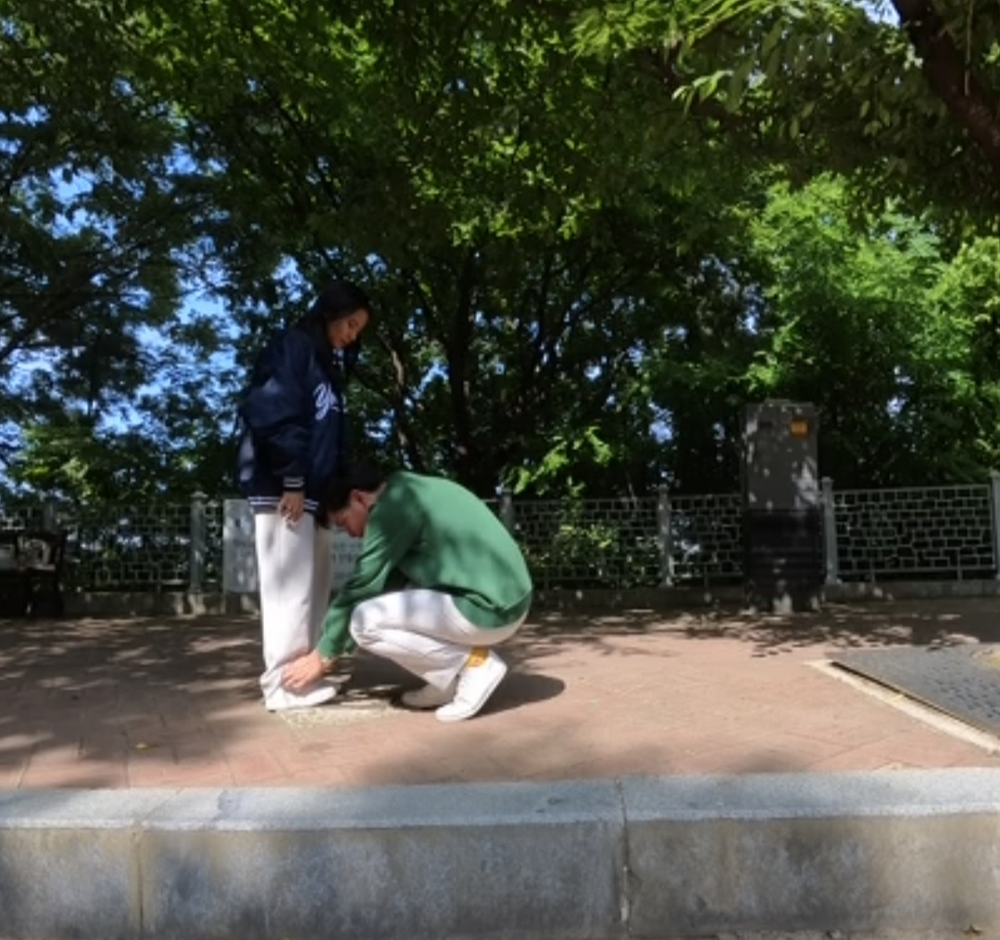
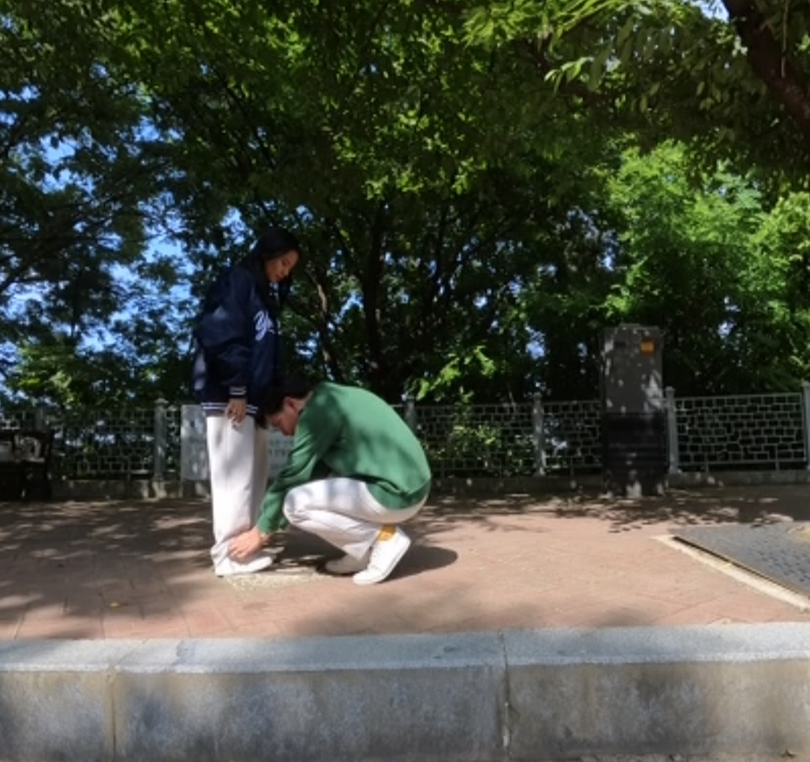

CLE: PT_Group 1_Del Mundo


 

Mr. and Mrs. Nagtalon believe marriage is about choosing the right partner, building trust, and keeping faith at the center of the relationship. In their six years together, they’ve learned patience, open communication, and the value of sharing both responsibilities and laughter. For them, a lasting marriage thrives on trust, humor, and never losing the childlike joy in each other.